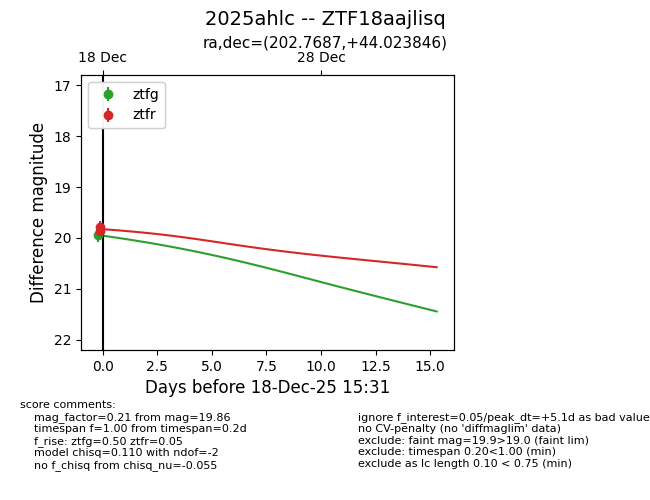
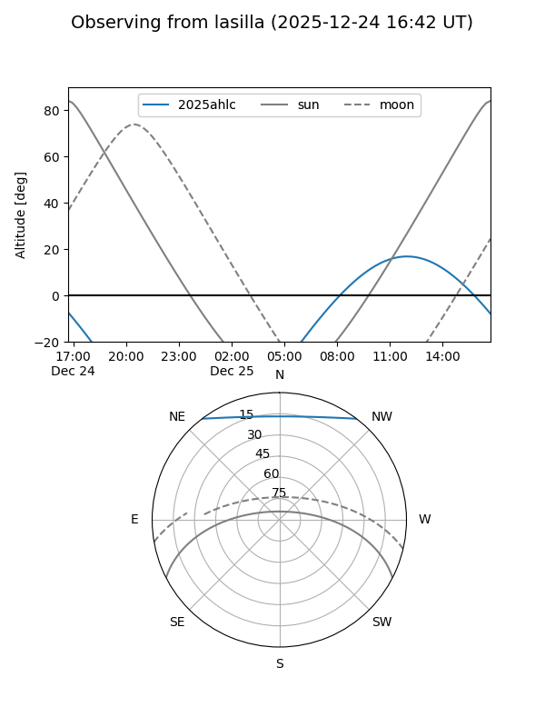
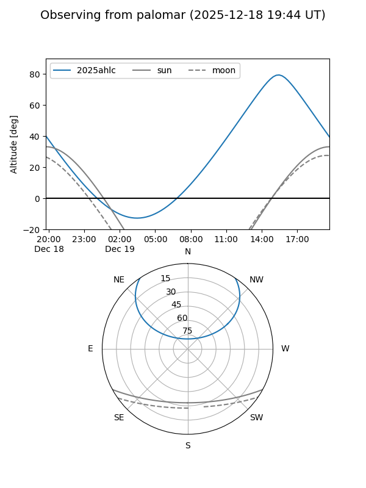
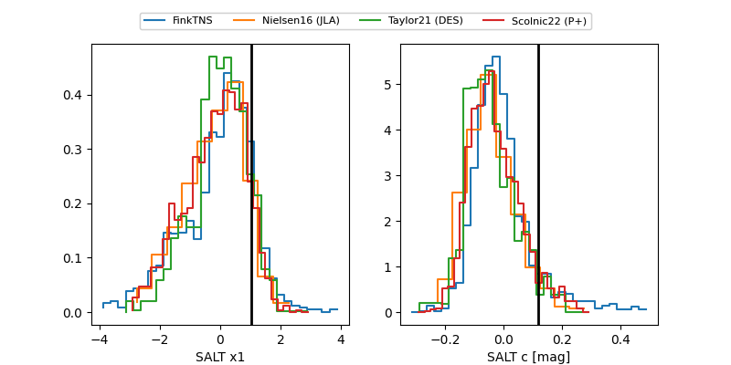

2025ahlc
Target 2025ahlc at 2025-12-18 15:17
Aliases and brokers:
FINK: fink-portal.org/ZTF18aajlisq
Lasair: lasair-ztf.lsst.ac.uk/objects/ZTF18aajlisq
ALeRCE: alerce.online/object/ZTF18aajlisq
TNS: wis-tns.org/object/2025ahlc
YSE: ziggy.ucolick.org/yse/transient_detail/2025ahlc
alt names
ZTF18aajlisq (ztf,fink_ztf)
2025ahlc (tns,yse)
Coordinates:
equatorial (ra, dec) = 202.7687,+44.02385
equatorial (HMS+DMS) = 13:31:04.49,+44:01:25.85
galactic (l, b) = (100.2119,+71.31407)
Photometry
last ztfg=19.94, ztfr=19.79
1 ztfg, 1 ztfr detections
Lightcurve

Visibility


Additional plots
